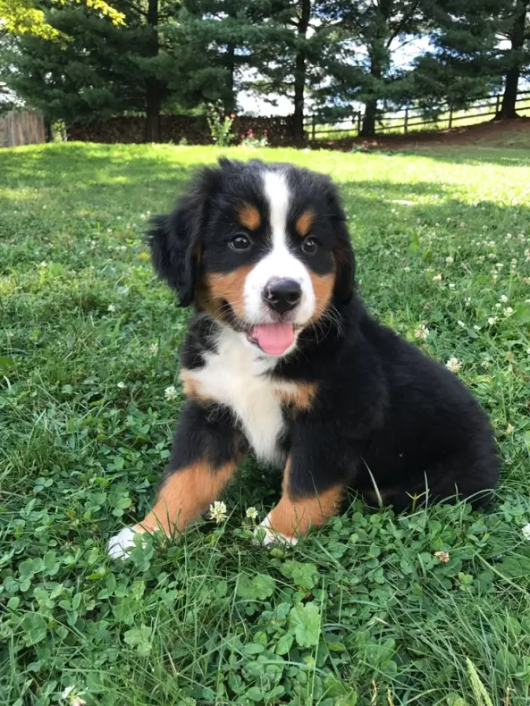
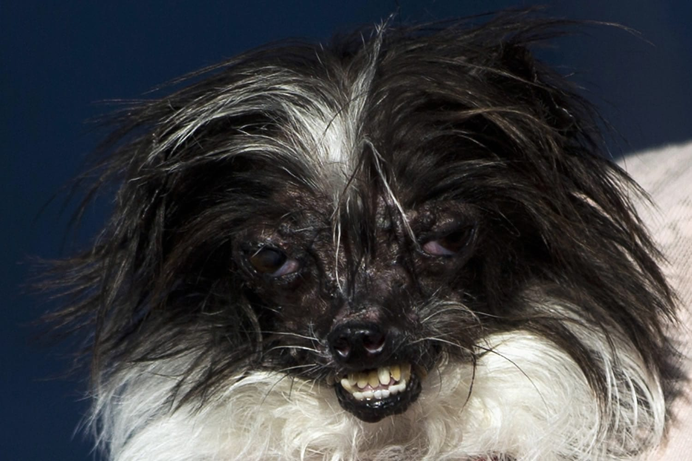
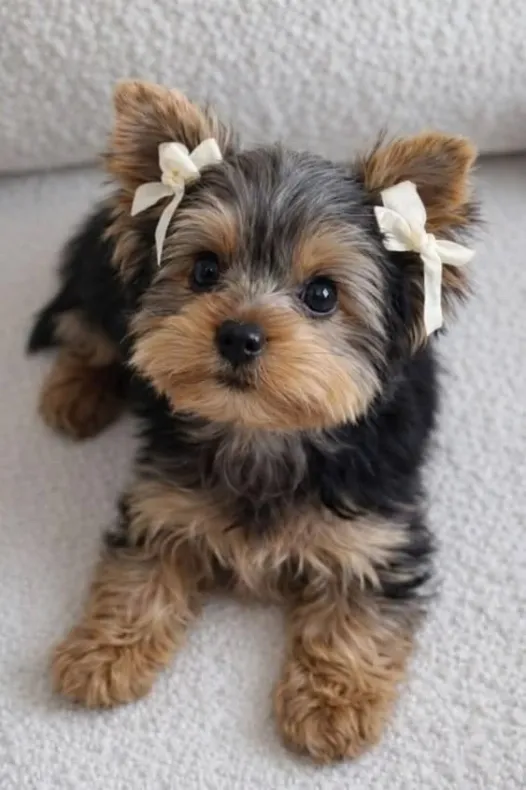
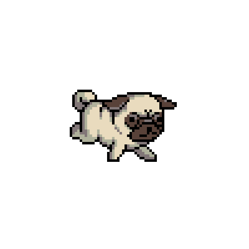
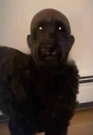

Rescate
Buscamos perritos en situaciones vulnerables para darles una segunda oportunidad en un entorno seguro.



* ¡Un nuevo amigo te espera!
* Explora el refugio. Muchos perritos rescatados buscan un hogar seguro...
* Ver mover sus colitas te llena de ESPERANZA y ALEGRÍA.
Buscamos perritos en situaciones vulnerables para darles una segunda oportunidad en un entorno seguro.
Atención médica, alimento de calidad y mucho amor para sanar tanto sus heridas físicas como sus corazones.
Conectamos a cada peludito con la familia ideal, asegurando un futuro lleno de mimos y juegos.

Rescatar, rehabilitar y reubicar a caninos en estado de abandono y maltrato, transformando vidas mediante la concientización social y el cuidado responsable.
Ser el refugio líder de la región para 2028, erradicando el abandono animal y consolidando una comunidad comprometida con el bienestar y respeto animal.

Toby es un cachorro lleno de energía, rescatado cerca de un cementerio. Le encanta correr tras las ramas, observar a otros animales y es extremadamente apegado. ¡Está listo para mudarse a tu casa y convivir todas las noches contigo!